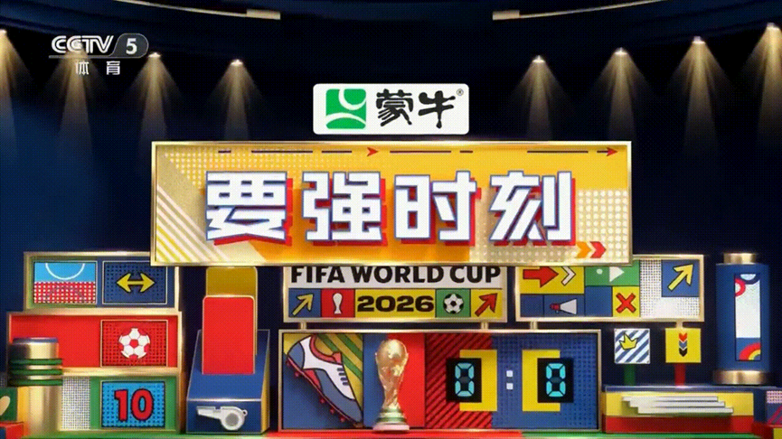
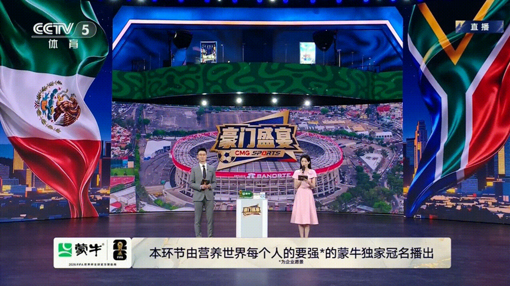
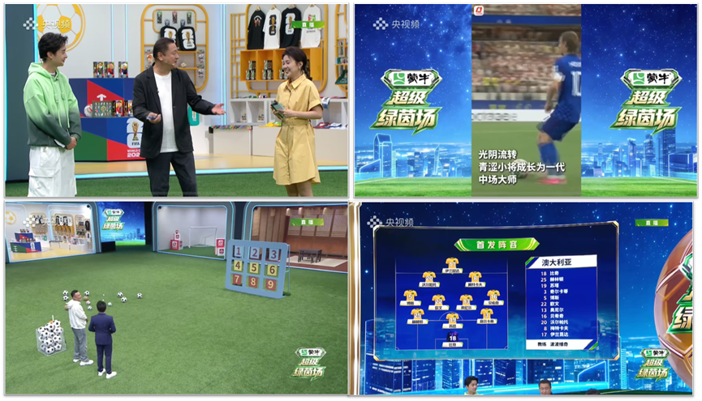

案例发生了什么


蒙牛以总台 2026 世界杯转播钻石合作伙伴身份，把多个媒介接口组织成一套连续陪伴：赛事直播锁定“补水时刻”，CCTV-5《豪门盛宴》定制“要强时刻”，央视频与央视体育的《超级绿茵场》则由蒙牛独家冠名。官方复盘能证明转播广告、节目板块和互动演播室已经执行，但节目总体触达不能直接等同于蒙牛的单品牌效果。
案例启示
案例启示
关键动作
- 在比赛直播中占据“补水时刻”这一重复出现、与乳品营养语义相容的稀缺点位。
- 用“营养世界每个人的要强”主题广告覆盖家庭、亲友和普通观众，而非只讲竞技热血。
- 在《豪门盛宴》用“要强时刻”聚焦球员高光，将品牌主张写入节目固定板块。
传播与商业机制
传播路径
以“总台钻石合作”为资源起点，进入直播、节目、演播室、短视频、互动工具与跨屏行动入口，让赛事权益转化为用户可接触、可讨论或可参与的内容。
商业承接
不把曝光直接等同销售，重点观察收视/观看、互动、搜索、扫码、会员与广告/商业承接，并区分品牌自报、平台数据与可独立核验结果。
可复用的方法大屏合作的价值来自“一项权益、多种接口”：规则节点负责记忆，节目板块负责解释，互动内容负责延长和沉淀。
适用条件、风险与证据
- 区分电视贴片、节目冠名、平台定制和直播互动，不混同统计。
- 提前按赛程准备高光、平淡和意外结果的内容响应。
- 用跨屏搜索、领券、到店或线索数据补足单一收视口径。
核验记录可将已核动作作为内部判断基础；涉及投放规模、销售结果或合作细则时，仍应以品牌、平台或权利方的一手发布为准。 当前记录：已核（中央广播电视总台）；素材状态：已归档 5 张转播广告、节目板块与互动执行图。
品牌与权威来源物料
这里只展示可追溯到品牌、权利方、官方账号或明确注明原始出处的真实物料；研究图卡不计入案例图片。


资料与来源
官方资料、结果数据与下一步
已验证事实
- 中央广播电视总台总经理室确认蒙牛为总台 2026 世界杯转播钻石合作伙伴，并锁定赛事直播中的“补水时刻”。
- 总台官方页同时确认蒙牛在《豪门盛宴》定制“要强时刻”，并独家冠名央视频、央视体育《超级绿茵场》。
- 本页 5 张图均直接取自该央视网官方复盘，包括转播广告、节目板块与互动演播室执行。
可追溯的结果
- CSM 全媒体视听数据称，截至 7 月 2 日，《豪门盛宴》节目及短视频累计触达超过 22.3 亿人次，《超级绿茵场》演播室及相关短视频累计触达超过 5.5 亿人次；二者均为节目总盘，不能全部归因于蒙牛。
原始来源
来源链接优先指向品牌、权利方或持权媒体官方页面；品牌自述数据按原始定义记录，不视作独立审计结果。